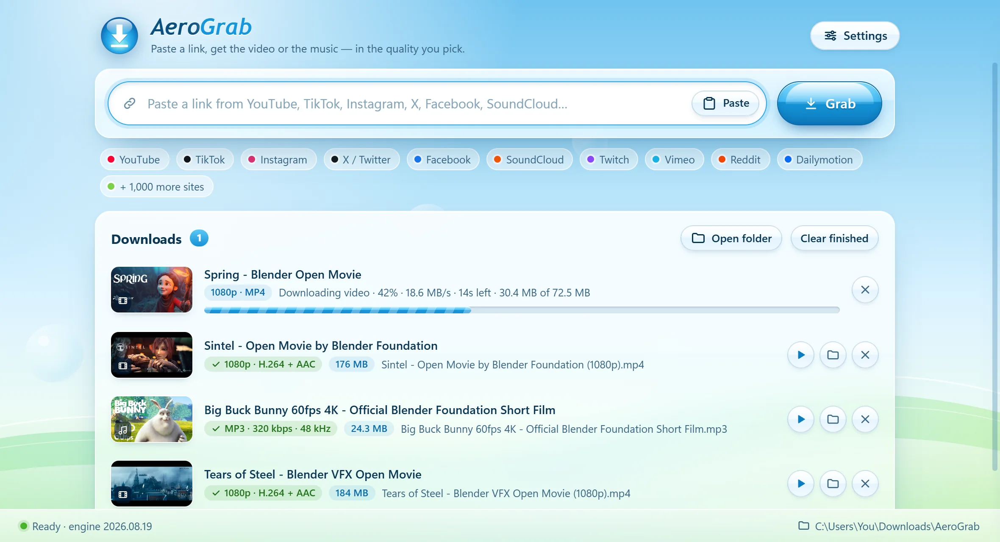
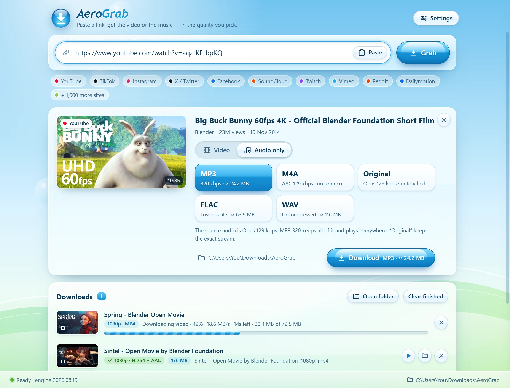
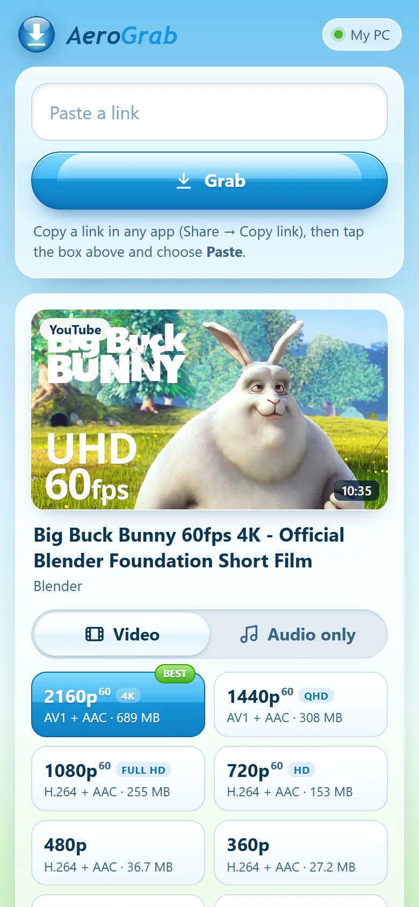

What you pick is exactly what you get.
AeroGrab reads the site’s real list of qualities — 4K, 1440p, 60 fps, HDR — and shows the size of each one before you download. Nothing is upscaled or re-encoded.
- Checked after every downloadIt reads the finished file back and shows a ✓ with the real resolution, frame rate and codecs.
- Plays everywhereMP4 with H.264 whenever the site offers it, so files open on any PC, phone or editor. Prefer smaller AV1 or VP9? One switch in Settings.
- Honest hintsIf the best version needs a newer player, or HDR would look washed out on your screen, AeroGrab tells you before you download.

Songs, podcasts, soundtracks — straight to MP3.
Switch to Audio only and pick MP3 320 kbps, M4A, FLAC, WAV, or the original stream untouched. Cover art, title and artist are added for you.
- Knows the sourceIt tells you the quality the site actually has (say, Opus 129 kbps), so there are no surprises.
- Ready for your libraryAlbum art and tags are embedded, so songs look right in your music player and on your phone.

Paste links on your phone. Your PC does the work.
Turn on phone mode, scan the code with your iPhone or Android, and add AeroGrab to your Home Screen. Paste a TikTok, Instagram or YouTube link on your phone — your PC downloads it in full quality, and one tap saves it to your phone.
- No app store neededIt’s a page your PC serves on your home Wi‑Fi, so it works the same on iPhone and Android.
- Private to youOnly phones that scanned your code can connect, and nothing leaves your home network except the download itself.
- Save or playFinished downloads show up on your phone: play them right away or save them to your phone.

Built so you never have to troubleshoot.
Whole playlists
Paste a playlist, or a bunch of links at once. Tick what you want and download them all in one go.
Keeps itself working
Sites change all the time. AeroGrab updates its download engine daily and quietly retries when something hiccups.
Picks up where it left off
Closed the app or lost Wi‑Fi halfway through? Press Retry and it continues instead of starting over.
Your sign-in, when needed
For private or age-restricted posts, AeroGrab can borrow the sign-in from your browser. It’s never stored or sent anywhere.
Tiny and tidy
A download of under 2 MB that installs just for you, without admin rights. Remove it from Windows Settings any time.
Straight answers
If something can’t be downloaded — private, deleted, region-locked or copy-protected — it tells you why, in plain words.
Three steps. That’s it.
Copy the link
In the app or website you’re watching, tap Share → Copy link, or copy the address bar.
Paste it into AeroGrab
It reads the link in a second or two and lists every quality available, with sizes. It even spots links already on your clipboard.
Pick and download
Choose video or audio and a quality, then press Download. Files land in Downloads › AeroGrab.
Good to know
Is AeroGrab really free?
Yes. No ads, no subscription, no account and no “pro” version.
Windows says “Windows protected your PC”. Is it safe?
That’s Windows SmartScreen being careful with a new app that isn’t code-signed yet (signing certificates cost money every year). Click More info → Run anyway.
AeroGrab is built on well-known open-source tools — yt-dlp, FFmpeg and Deno — and downloads them from their official releases. To check your file is the original, compare its SHA-256 fingerprint:
shown after the first release build
What happens when I install it?
It installs for your Windows user only (in your AppData folder), adds Start-menu and Desktop shortcuts, and appears in Settings → Apps. No admin rights needed.
The first time it opens, it downloads its engine — about 150 MB, once — from the official yt-dlp, FFmpeg and Deno releases on GitHub. After that it keeps the engine up to date by itself.
Which sites does it work with?
YouTube (including Shorts and YouTube Music), TikTok, Instagram, X/Twitter, Facebook, SoundCloud, Twitch, Vimeo, Reddit, Dailymotion, Bilibili and over a thousand more — everything the open-source yt-dlp project supports. A few sites only show some posts to signed-in people; AeroGrab can use your browser’s sign-in for those.
Is there anything it can’t download?
Copy-protected (DRM) services such as Netflix, Disney+, Spotify and Apple Music can’t be downloaded by anything like AeroGrab. Live streams can be downloaded once they’ve ended.
Is downloading videos legal?
It depends on what you download and where you live. Your own uploads, Creative Commons or public-domain videos, and anything you have permission for are generally fine. Downloading copyrighted music or films without permission usually isn’t, and many sites’ terms don’t allow downloading. AeroGrab is a tool — please use it responsibly.
Where do my files go?
Into Downloads › AeroGrab by default. You can pick any folder in Settings, and open a file or its folder straight from the downloads list.
Does it work on my phone? Mac? Linux?
AeroGrab itself runs on Windows 10 and 11. With phone mode you can use it from an iPhone or Android phone on the same Wi‑Fi: paste links on the phone, your PC does the downloading, and you save the files to your phone.
There’s no separate App Store or Google Play app, because those stores don’t allow apps that download from YouTube and similar sites. Mac and Linux aren’t supported yet.
How do I uninstall it?
Windows Settings → Apps → Installed apps → AeroGrab → Uninstall. Everything you downloaded stays where it is.
Ready when you are.
One small download. Paste your first link a minute from now.
Download for Windows